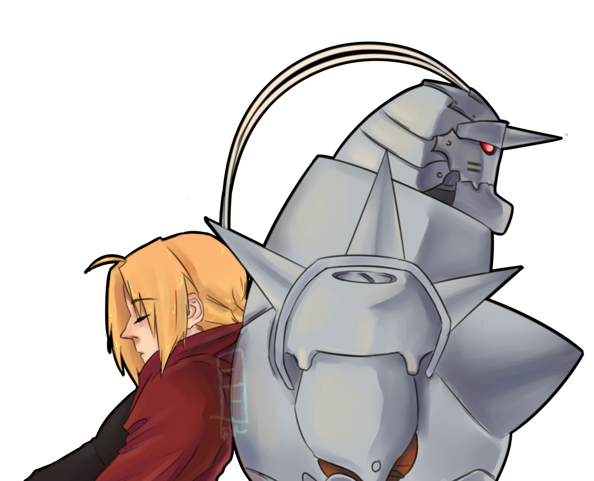
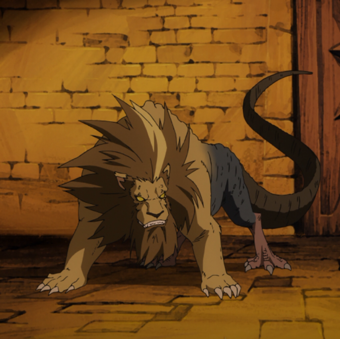

No Brasil, o primeiro anime foi transmitido no Animax e na RedeTV! Episódios OVAs, jogos eletrônicos, livros suplementares, cartas colecionáveis e uma variedade de action figures foram lançados. Um filme em live-action baseado na série foi produzido e estreou em 2017 nos cinemas japoneses e desde fevereiro de 2018 está no catálogo da Netflix. O mangá de Fullmetal Alchemist vendeu aproximadamente 64 milhões de cópias no mundo. Em duas pesquisas realizadas no website oficial da TV Asahi, o anime foi votado como o anime mais popular de todos os tempos no Japão.
A série se passa em um universo ficcional com um estilo steampunk, semelhante a época após a Revolução Industrial Europeia, onde a alquimia é uma das mais avançadas técnicas científicas. Nem todos os personagens são capazes de utilizar essa técnica, é necessário aprender a dominar a alquimia. A maioria dos eventos da história ocorrem em Amestris, um país em forma circular governado por militares. Em Fullmetal Alchemist Brotherhood, os habitantes de xing usam a alquimia chamada 'alkahestría, usada para curar ferimentos.
Depois de perderem sua mãe, Alphonse e Edward Elric tentam trazê-la de volta usando uma técnica de alquimia proíbida. Contudo, o princípio básico da alquimia é a ‘troca equivalente’, e tentar ressucitar alguém custa muito alto. Ed perde sua perna, e Al perde seu corpo. Ed consegue selar a alma de Al dentro de uma grande armadura metálica, dando em troca seu braço. Anos depois, Ed (com dois membros de metal) e Al (ainda preso na armadura) deixam a sua cidade natal.Ed, que possui um talento nato para a alquimia, se torna um alquimista com certificado nacional, e logo passa a ser chamado de ‘fullmetal alchemist’. Mas o verdadeiro objetivo dos irmãos é encontrar a pedra filosofal, na esperança de recuperarem os seus corpos originais. Logo eles descobrem que essa mística pedra, que pode nem existir, é visada não só por eles, mas como muitas outras pessoas também.
É o irmão mais velho. É ele que toma a frente para partir em busca da Pedra Filosofal na esperança de recuperar o corpo de Alphonse e de seu braço e de sua perna.
Al é o irmão mais novo de Edward. Calmo e gentil, ele acompanha Ed na busca pela Pedra Filosofal. Sua alma foi fixada em uma enorme armadura medieval o que leva as pessoas constantemente a acharem que ele, e não Ed, é o famoso Alquimista de Aço.
A diferença deles para os seres humanos são que eles tem o poder de regenerar qualquer ferimento.
Eles estão à serviço do “Pai” e cada um representa um dos Sete Pecados Capitais:
Luxúria (Lust), Gula (Gluttony), Ira (Wrath), Preguiça (Sloth), Ganância (Greed), Orgulho (Pride) e
Inveja (Envy).
Quimeras de Cornello
Durante o arco de Lior, Cornello chegou a criar 2 quimeras feitas apenas de
animais.
Uma era a fusão de três animais identificados leão ( parte da frente do corpo ), pássaro ( parte de
trás do corpo ) e lagarto ( cauda ) a outra era uma fusão de vários pássaros para formar um grande
papagaio.
Nina
Criada por Tucker, é a fusão da garotinha Nina com seu cachorro Alexander.
Mãe de Nina
Antes de fundir Nina com Alexander, Tucker criou uma quimera usando sua esposa e um
animal não revelado.
Tucker
Tucker após ser preso pelos crimes foi fundido com um animal não identificado
Darius, Heinkei, Jerso, Zampano
As quimeras que estavam ao lado de Kimblee no anime Brotherhood, possuíam corpo de animais porém
eram bípedes, possuíam traços humanos além de altura praticamente humana.

E agora os tão esperados motivos para assistir Fullmetal Alchemist: Brotherhood
Comecei por esse ponto por motivos óbvios, muitas animações japonesas ainda fazem isso. Fullmetal é um anime que não há objetificação das personagens femininas!
Sem lutas de 20 minutos entediantes. Nesse anime nem tudo é resolvido na violência, apesar das lutas serem muito boas o anime não é só isso, existem outras maneiras de resolver os problemas. Fullmetal tem episódios muito bem desenvolvidos então ao decorrer os personagens usam soluções criativas envolvendo ciência (já que eles são alquimistas).
Personagens motivados e com histórias impactantes. É muito interessante assistir algo que você sente exalando motivação, Fullmetal é assim. Um detalhe importante é que tem momentos que o anime possui bidimensionalidade entre os irmãos Elric e mesmo assim, a amizade continua firme e forte e sem esquecer seus propósitos.
Durante o anime, a coisa que você mais fará é criar teorias sobre tudo, "quem é pai!? O que é a verdade?!", para mim essa é a melhor parte de assistir.
FMA lida com problemas como o racismo e a xenofobia, conta com cenas tristes de pessoas inocentes sendo afetadas pelo preconceito de outras pessoas.